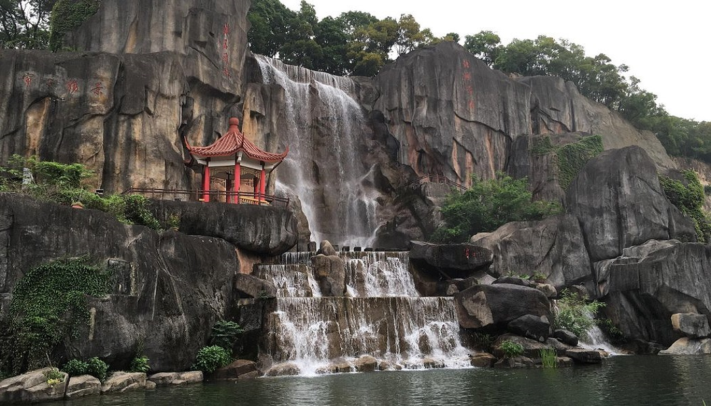

Fuzhou

Fuzhou, the capital of southeast province of Fujian, also referred to as Rongcheng (city of Banyang trees), is an important southeast coastal city faces East China Sea as well as a nearest capital city of the country faces the island of Taiwan. Located in the downstream of Min River, Fuzhou is adjacent to Ningde City, Nanping City, Sanming City and Putian City. The city is heavily populated by Han people, who live harmony with over 20 ethnic minorities of Manchu, Miao, Hui, and so on.Just as its Chinese name Fu (福) implies, it is a city full of good fortunes (Fu).Fuzhou is one of the first open coastal cities in China. Mawei Fuzhou, the cradle of the modern Chinese Navy, has cultivated Chinese shipping culture. It is both a historic and a cultural city with over two-thousand-year of history.Such historical sites as Sanfang Qixiang, Fujian Tulou and Mount Wuyi combining natural scenery and tea culture are waiting for you to explore.
History
Fuzhou was occupied by People's Liberation Army with little resistance on 17 August 1949. In the 1950s, the city was on the front line of the conflict with KMT in Taiwan, as hostile KMT aircraft frequently bombed the city. The bombing on 20 January 1955 was the most serious one, killing hundreds of people. Fuzhou was also involved in violent mass chaos during the Cultural revolution. Different groups of Red Guards fought with each other using guns on the streets of the city, and even attacking the People's Liberation Army.
Under the reform and opening policy since the late 1970s, Fuzhou has developed rapidly. In 1982, Fuzhou became the first city in China where the stored program control was introduced, which marked a milestone in the history of telecommunications in China. In 1984, Fuzhou was chosen as one of the first branches of Open Coastal Cities by the Central Government. On December 13, 1993, a raging fire swept through a textile factory in Fuzhou and claimed the lives of 60 workers. On October 2, 2005, floodwaters from Typhoon Longwang swept away a military school, killing at least 80 paramilitary officers.
Demographics
The two traditional mainstream religions practiced in Fuzhou are Mahayana Buddhism and Taoism. Traditionally, many people practice both religions simultaneously. The city is also home to many Buddhist monasteries, Taoist temples and Buddhist monks. Apart from mainstream religions, a number of religious worship sites of various local religions are situated in the streets and lanes of Fuzhou.
The origins of local religion can be dated back centuries. These diverse religions incorporated elements such as gods and doctrines from other religions and cultures, such as totem worship and traditional legends. For example, Monkey King, originated to monkey worship among local ancients, gradually came to embody the God of Wealth in Fuzhou after the novel Journey to the West was issued in Ming dynasty. As the most popular religion in the Min River Valley, the worship of Lady Linshui is viewed as one of the three most influential local religions in Fujian, the other two being the worship of Mazu and Baosheng Dadi (保生大帝).
Cuisine
Fuzhou dishes are representative of the Min (which is short for Fujian Province) Cuisine that is very much a feature of Fujian Province and is one of the Eight Major Cuisines of China .One of the most renowned Fuzhou dishes is Fotiaoqiang (Buddha Jumps Over the wall). With more than 100 year's history, it is a traditional Min Cuisine recipe. It is said to have been created by the wife of a Fuzhou official, who in 1876 was entertaining an important member of the Fujian Government in his home. His wife, who was an excellent cook placed chicken, duck, pork and seafood together into an empty wine jar to simmer following a recipe which was known at the time as 'Full of Blessing and Longevity'. When the dish was served, the visitor praised the aroma and the delicious flavor and was so impressed that when he returned home he asked the cook – Zheng Chunfa to learn how the wife of his host had prepared the food. Subsequently, Zheng Chunfa adapted the recipe making it yet more fulsome and on the strength of his creation opened a restaurant named Juchunyuan where he served it to the delight of his customers. One day several talented writers to the restaurant and were served with Zheng Chunfa's special version of 'Full of Blessing and Longevity'. When he opened the jar in which it had been cooked, the diners were so taken with the gorgeous smell that one of them wrote a poem about it. In it he said that the smell was so wonderful that even a Buddha would stop pattering and jump over the wall to have a taste. Hence the name 'Buddha Jumps over the Wall'.Simmered in a Shaoxing wine jar using more than twenty ingredients including fish, sea cucumber, chicken, pork and mutton, dried scallop, sea-ear, needle of bamboo shoot and pigeon egg, this traditional dish is widely renowned overseas and is considered the top dish among those of the Min Cuisine.